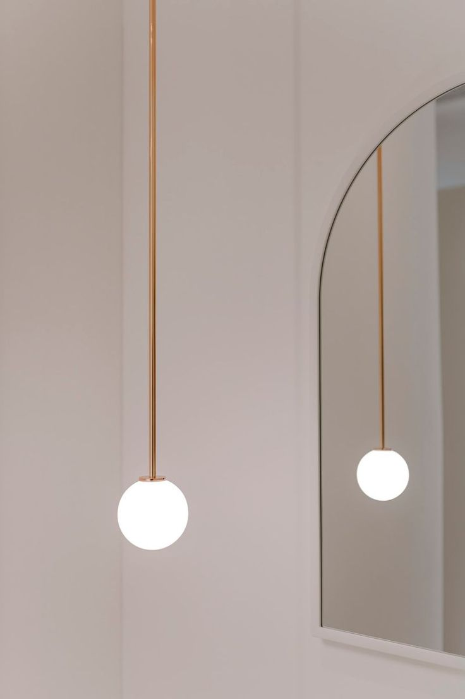

법원기능
재 판
심판권
-

최고법원으로서의 최종 심판권
고등법원, 특허법원, 지방법원, 가정법원, 군사법원의 민사·형사·행정·특허 및 가사사건 판결에 대한 상고사건
결정·명령에 대한 재항고사건
특별한 경우 지방법원의 제1심 판결에 대한 비상상고 사건 -
전속관할권
대통령 및 국회의원 선거 및 당선의 효력에 관한 소송
-
헌법재판권
대법원도 명령과 규칙의 위헌심판을 통해 헌법재판을 담당합니다.
- 명령·규칙·처분 또는 행정기관의 조치, 지방자치단체의 조례가 헌법이나 법률에 위반되는지에 대한 최종적인 심사권한
또한 대법원은 각급 법원의 판결이 헌법에 위반되었는지를 심사합니다.
심판권의 행사
대법원의 심판권은 전원합의체와 대법관 3인 이상으로 구성된 부에서 행사한다.
-
재판부 구성
재판부는 부(部)와
전원합의체로 구성된다. -
합의방식
부 - 전원 의견 일치에 따라 재판
전원합의체 - 출석 과반수 의견에 따라 심판 -
구성방식
부 - 대법관 4인으로 구성되며
3개의 부가 존재한다.
전원합의체 - 대법원장이 재판장이 되며,
대법관 전원의 3분의 2 이상으로 구성된다. -
대상사건
부 - 주로 재판부에서 심판 전원합의체
부에서 의견이 일치되지 못한 경우
명령·규칙이 헌법 또는 법률에 위반된다고 인정하는 경우
부에서 재판함이 적당하지 않다고 인정하는 경우
대법원에서의 공개변론
대법원에서의 변론에 관한 규칙(규칙 제2765) 상세보기
대법원의 상고사건은 상고장, 상고이유서, 답변서 그 밖의 소송기록에 의하여 변론 없이 판결할 수 있습니다.
그러나 대법원이 소송관계를 분명하게 하기 위하여 필요한 경우에는, 특정한 사항에 관하여 변론을 열어 참고인의 진술을 들을 수 있도록 소송법에 규정되어 있습니다.
공개변론 대상사건은 주로 사회 각층의 이해가 충돌하는 중요한 사건, 국민 생활에 중대한 영향을 미치는 사건 등입니다.
공개변론은 당사자의 진술, 그 분야의 전문적 식견이나 지식을 가지고 있는 참고인의 진술, 대법관의 당사자, 참고인에 대한 질의 절차로 진행됩니다.
한편, 법원조직법과 대법원규칙에 따라 대법원은 국민의 재판에 대한 이해와 사법에 대한 신뢰를 높이기 위하여 인터넷, 텔레비전 등 방송통신매체를 통하여 공개변론 과정을 방송하게 할 수 있습니다.
대법원 전원합의체 공개변론 사건을 중계방송에 의하여 투명하게 공개함으로써, 국민의 사법부에 대한 신뢰를 제고할 수 있고, 사회적 가치 판단이 필요한 중요 사건에 대한 국민적 공론의 장을 마련할 수 있으며, 궁극적으로 대법원이 우리 사회의 갈등을 조율하고 보다 발전된 형태의 사회통합을 이루는 기능을 충실하게 발휘하게 하는 토대를 마련할 수 있습니다.
이와 같은 취지에 따라 대법원은 2013. 3. 국외이송약취 사건에 대하여 전원합의체 공개변론을 열고 사상 최초로 중계방송을 실시하였습니다.